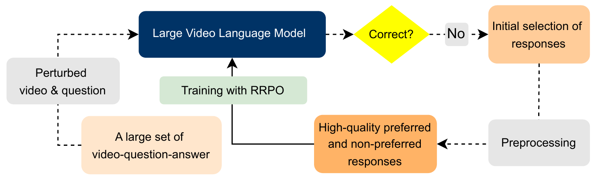
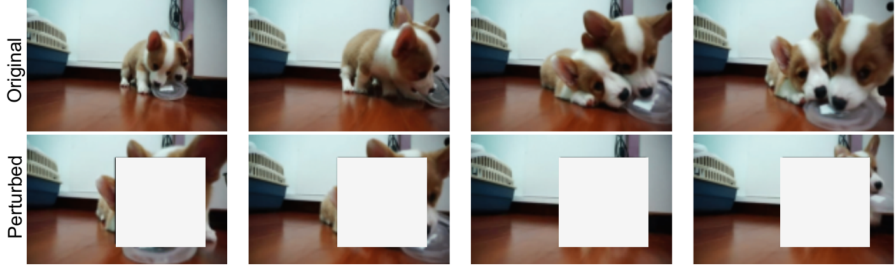
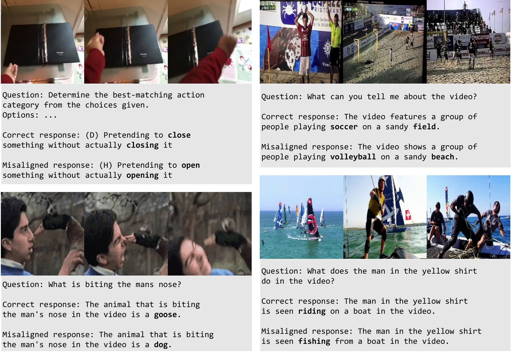
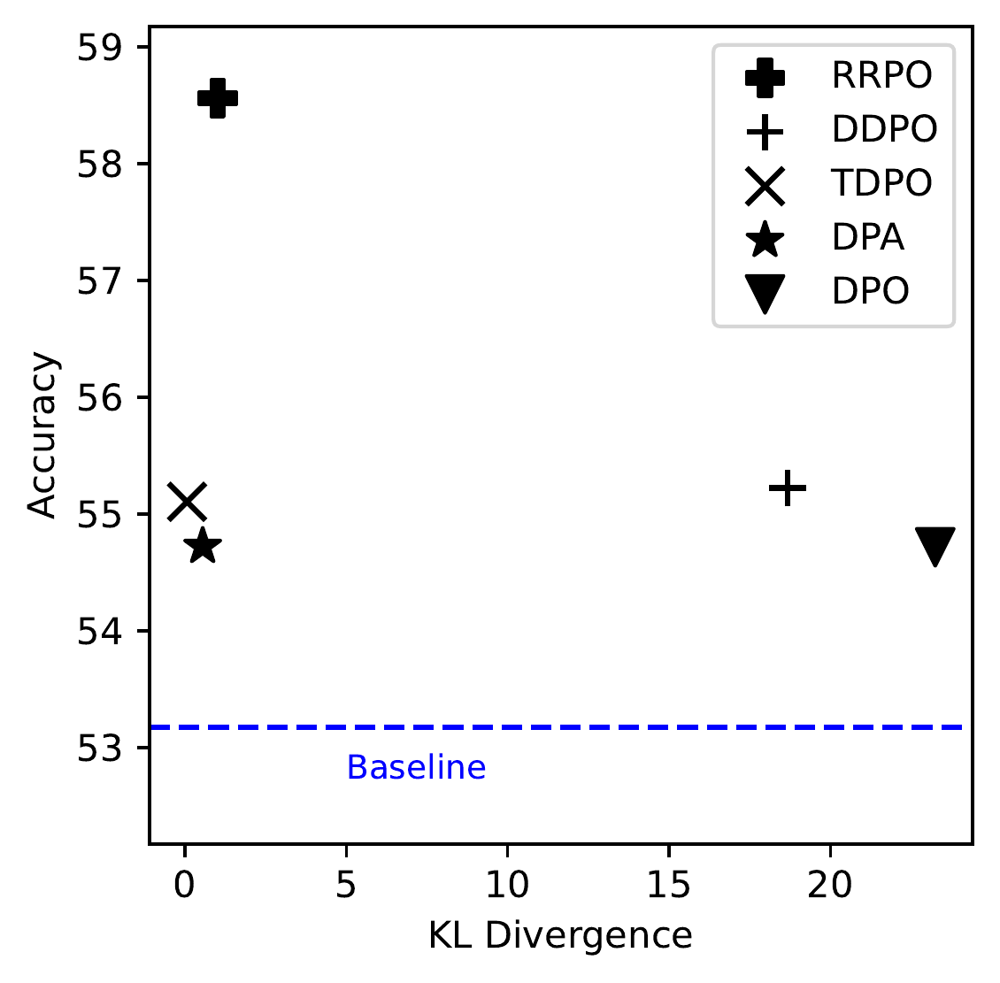

NeurIPS 2025
|
Paper
|
Website
|
Code
|
|
Data
|
Our contributions
👉 Our rigorous evaluation demonstrates the effectiveness of our proposed method across diverse video tasks, including video hallucination, short and long video understanding, and fine-grained temporal reasoning, among others. Moreover, our experimental and theoretical analysis highlight the superiority of RRPO over DPO in aligning LVLMs. |
|  | An overview of our self-alignment framework. |
|  |  |
| An example of perturbed video. | A few training samples. |
| An Overview of Refined Regularized Preference Optimization
Given an input \(x\) with a pair of responses \(\{y^+, y^-\}\), where \(y^+ \succ y^- | x\), we align \(\pi_\theta\) to favor \(y^+\) over \(y^-\). RRPO training objective is defined as: \[ \mathcal{L}_\text{RRPO}(\pi_{\theta};\pi_\text{ref}) = -\mathbb{E}_{(x,y^+,y^-) \sim \mathcal{D}} \left[ \log \sigma (u) + \alpha \cdot \mathbb{D}_{\text{TKL}} \big(x,y^+\big) \right] \] the total reward margin \(u\) is defined as: \[ u = \sum\limits_{i=1}^{N} u_i = \sum\limits_{i=1}^{N} \bigl( r_\theta(x, y^+_i) - r_\theta(x, y^-_i) \bigr) \] the reward for \(i^{th}\) phrase \(r_\theta(x, y_i)\) is defined as: \[ r_\theta(x, y_i) = \beta \log \left( \frac{ \prod\limits_{j=s_i}^{e_i} \pi_\theta(t_j \mid x, t_{\lt j}) } { \prod\limits_{j=s_i}^{e_i} \pi_{\text{ref}}(t_j \mid x, t_{\lt j}) } \right) \] where \({s_i}\) and \({e_i}\) are the start and end token indices of \(i^{th}\) phrase the token-wise KL regularizer \(\mathbb{D}_{\text{TKL}}\) is defined as: \[ \mathbb{D}_{\text{TKL}} \big(x,y^+;\pi_{\text{ref}} \,\|\, \pi_{\theta} \big) = \sum\limits_{t=1}^{|y^+|} \mathbb{D}_{\text{KL}} \left( \pi_{\text{ref}} (\cdot \mid [x, y^+_{\lt t}]) \,\|\, \pi_{\theta} (\cdot \mid [x, y^+_{\lt t}]) \right) \] |
| TVBench | VideoHallucer | VideoMME | MLVU | Δ / %Δ | |
|---|---|---|---|---|---|
| LongVU7B (base) | 53.7 | 39.2 | 56.2 | 63.6 | – |
| + DPO | 54.3 | 40.9 | 56.6 | 63.6 | 0.7 / 1.5 |
| + DPA | 54.6 | 40.3 | 56.9 | 63.9 | 0.7 / 1.5 |
| + TDPO | 53.9 | 41.4 | 57.0 | 63.8 | 0.8 / 1.9 |
| + DDPO | 54.2 | 41.7 | 56.7 | 63.6 | 0.9 / 2.0 |
| + RRPO (ours) | 56.5 | 44.0 | 57.7 | 64.5 | 2.5 / 5.4 |
|  | Performance relative to model divergence. RRPO exhibits the best performance- divergence trade-off. |
| Models | #F | TV Bench | Temp Compass | Video Hallucer | Vid Halluc | MV Bench | Video MME | MLVU | LongVideo Bench |
|---|---|---|---|---|---|---|---|---|---|
| VideoChat2 | 16 | 44.0 | 59.3 | 23.1 | 73.3 | 60.2 | 41.0 | 46.4 | 40.4 |
| VideoChat2 + DPO | 16 | 45.7 | 60.0 | 22.1 | 72.4 | 59.6 | 43.0 | 47.4 | 41.0 |
| VideoChat2 + RRPO | 16 | 45.8 | 60.2 | 32.9 | 76.4 | 59.0 | 44.3 | 47.9 | 42.8 |
| LLaVA-Video | 64 | 51.0 | 66.0 | 50.0 | 76.6 | 61.1 | 64.0 | 68.6 | 60.1 |
| LLaVA-Video + DPO | 64 | 51.9 | 66.4 | 53.3 | 76.5 | 60.6 | 63.1 | 67.4 | 59.4 |
| LLaVA-Video + RRPO | 64 | 51.9 | 66.8 | 55.7 | 76.5 | 62.2 | 64.5 | 69.1 | 60.4 |
| LLaVA-Video + RRPO (32f) | 64 | 52.2 | 67.4 | 55.8 | 76.6 | 62.1 | 64.5 | 69.4 | 60.1 |
| LongVU | 1fps | 53.7 | 63.9 | 39.2 | 67.3 | 65.5 | 56.2 | 63.6 | 48.6 |
| LongVU + DPO | 1fps | 54.3 | 64.3 | 40.9 | 68.5 | 65.9 | 56.6 | 63.6 | 49.4 |
| LongVU + RRPO | 1fps | 56.5 | 64.5 | 44.0 | 71.7 | 66.8 | 57.7 | 64.5 | 49.7 |
Highlights
👉 The fine-grained reward modeling in RRPO improves capabilities without diverging away from its initial state, thus preserve the valuable prior knowledge. 👉 RRPO scales effectively with more data and high-resolution inputs, and generalizes well across diverse LVLMs. 👉 RRPO exhibits consistent improvements across all setups over the base models in diverse video tasks. |